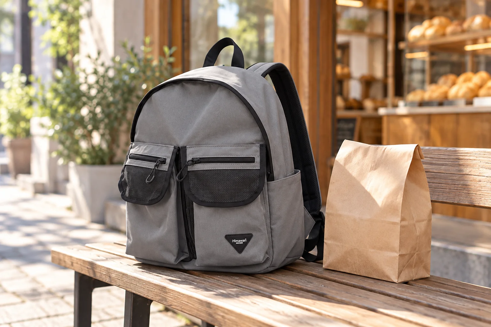

빵 봉투를 누르지 않고 돌아오는 길

출근길이나 집으로 돌아가는 길에 빵집에 들르면 백팩 외에 종이 봉투가 하나 늘어납니다. 매장 안에서는 반듯했던 봉투도 가방에 넣을 때는 책이나 충전 도구와 맞닿습니다. 빵의 모양이 단단한지, 위에 장식이 있는지에 따라 같은 봉투라도 다뤄야 할 방식이 달라집니다. 빈 공간이 보인다는 이유로 바로 넣기보다 구입한 상태의 포장과 이어지는 이동을 함께 보는 편이 좋습니다.
빵을 고를 때는 언제 먹을지와 어디까지 가져갈지 생각해볼 수 있습니다. 바로 가까운 곳에서 먹을 것인지, 다른 일을 마친 뒤 집으로 가져갈 것인지에 따라 운반 시간이 달라집니다. 포장 방식과 보관에 관해 확인할 것은 빵집의 안내를 따르세요. 제품별 조건을 가방의 기능으로 대신 해결하려 하지 않고, 매장에서 받을 포장과 별도 운반이 필요한지를 먼저 물으면 선택할 범위가 분명해집니다.
봉투 안의 모양을 먼저 보기
종이 봉투는 안에 있는 빵의 높이와 눌림을 모두 알려주지 않습니다. 납작한 봉투처럼 보여도 안쪽에 쌓인 빵이 있을 수 있고, 튀어나온 부분이 가방의 다른 짐과 닿을 수도 있습니다. 포장을 해체하라는 뜻이 아니라 받은 형태를 보고 어디가 눌리기 쉬울지 판단하는 것입니다. 상자 포장이 필요하다는 안내가 있다면 상자까지 포함한 부피와 잡을 위치를 확인합니다.
부드럽거나 장식이 있는 빵을 다른 물건 아래에 놓을 생각이라면 운반 방법을 다시 고를 수 있습니다. 백팩 안에 책과 파일이 반듯하게 들어 있어도 그 틈이 빵 봉투를 보호해주는 자리는 아닐 수 있습니다. 봉투를 다른 짐 위에 두더라도 지퍼를 닫을 때 눌리는지 봅니다. 손으로 계속 봉투를 받쳐야만 모양이 유지되는 위치라면 별도 가방에 들고 이동하는 쪽이 관리하기 쉬울 수 있습니다.
백팩을 이미 가득 채운 날에는 구입하는 양과 포장을 기준으로 판단합니다. 작은 빵을 하나 산 경우와 여러 종류를 함께 포장한 경우는 남는 부피가 다릅니다. 먼저 산 물건을 넣고 나중에 가방을 정리하기보다 오늘 들고 갈 다른 짐과 비교하면 됩니다. 별도 운반 가방이 있다면 그 안에서도 포장이 기울지 않는지 확인하고, 손잡이를 잡았을 때 바닥이 어느 방향으로 놓이는지 살펴보세요.
빵을 산 뒤 백팩에는 계속 사용할 개인 짐을 남겨두는 선택이 있습니다. Himawari No.1230 제품 정보의 그레이 모델을 일상 가방의 참고로 본다면, 빵 봉투를 담을 빈자리부터 찾기보다 교통카드와 연락 도구를 꺼내는 순서를 생각해볼 수 있습니다. 빵은 별도로 들고 가는 포장으로 준비하고 개인 물건은 기존 위치에서 찾는 방식입니다. 빵집에 들를 날이라고 평소 가방의 모든 짐을 다시 배치할 필요는 없습니다.

빵과 개인 물건을 별도로 들면 백팩을 열 때 봉투까지 움직일 필요가 줄어듭니다. 예를 들어 교통카드와 휴대전화는 기존의 닫힌 자리에서 찾고, 빵 봉투는 손에 든 운반 가방에 남겨둘 수 있습니다. 다만 비가 내리거나 우산을 함께 들 때는 손에 관리할 것이 늘어납니다. 한손으로 모든 짐을 억지로 모으기보다 포장을 유지하며 들 수 있는지, 다른 이동 방법을 선택할지 미리 생각해볼 만합니다.
이동 중에 다시 여는 가방
빵 봉투를 백팩 안에 넣기로 했다면 중간에 무엇을 꺼낼지 함께 생각합니다. 지갑을 찾으려면 먼저 빵을 빼야 하는 배치라면 매번 포장을 손에 들게 됩니다. 이동 중 쓸 소지품을 먼저 꺼낼 수 있게 위치를 바꾸거나 빵을 별도로 운반할 수 있습니다. 가방을 열고 닫을 때 봉투의 접힌 입구가 지퍼에 걸리지 않는지 확인하고, 내용물이 움직이지 않도록 무리하게 압축하지는 않습니다.
음료와 함께 구입한 날에는 용기와 빵 포장도 따로 봅니다. 음료 용기의 뚜껑과 잡는 방향은 실제 받은 제품의 안내에 따라 확인하고, 종이 봉투와 맞대어 두었을 때 불편한 부분이 있는지 살펴보세요. 백팩을 음료 보관 도구로 생각해 포장 확인을 생략하지 않습니다. 손에 들거나 별도로 옮겨야 하는 조건이 있다면 그 안내를 따라 개인 물건의 자리와 분리하면 됩니다.
대중교통이나 사람이 많은 통로에서는 손에 든 봉투가 주변에 눌리지 않도록 자신의 짐을 몸 가까이 관리합니다. 백팩을 내려놓을 때 봉투를 그 아래에 두면 나중에 가방을 집는 과정에서 모양이 달라질 수 있습니다. 두 물건을 나란히 두되 통로를 비워둘 수 있는 자리를 봅니다. 잠시 앉아 있다가 일어날 때에도 봉투와 백팩이 각각 어디에 있는지 확인하면 두 개의 짐을 함께 챙기기 쉽습니다.
목적지에 도착하면 빵 포장부터 원래 안내받은 조건에 맞는 곳으로 옮깁니다. 백팩에 넣었다면 개인 짐을 모두 꺼내기 전에 봉투의 상태를 확인하고 따로 정리하세요. 포장재에서 부스러기나 흔적이 가방에 남았는지도 봅니다. 매장에서 받은 설명을 확인할 수 있는 표식이 있다면 필요한 동안 포장과 함께 두면 되고, 영수증을 오래 가방 안에 남겨둘 필요는 별도로 판단할 수 있습니다.
다음에 같은 빵집에 들를 계획이라면 실제로 불편했던 포장이나 이동 구간을 기억해둘 만합니다. 봉투를 넣기 위해 출근 짐을 빼야 했는지, 손에 우산까지 들었을 때 잡기 어려웠는지가 구체적인 기준이 됩니다. 그에 맞춰 구매량을 바꾸거나 별도 운반 가방을 준비할 수 있습니다. 빵을 가방에 넣는 방법 하나를 정답처럼 유지하기보다 그날 산 물건의 모양과 함께 들 짐을 다시 보는 것이 편합니다.